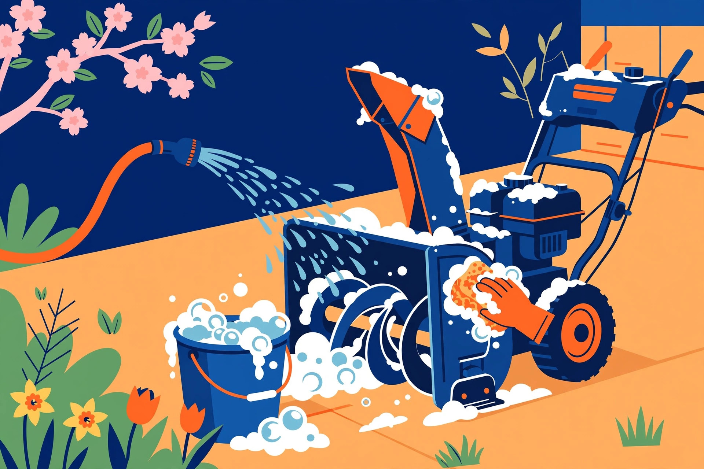

The last clearing of the season feels like the end of the job. It is actually the start of next season's first start. Almost every November no-start was decided in April: fuel left to deteriorate in the tank and carburetor, salt residue left to corrode the housing all summer, a machine put away wet under a sealed cover. End-of-season storage is a short, ordered procedure — fuel first, then oil and inspection, then cleaning, then covering — and doing it in spring is what makes the machine boringly reliable in winter.
The fuel decision: run it dry or stabilize it
This is the one real decision in the process, and manufacturers frame it as a choice between two legitimate routes. Your manual's instruction for your model governs — but understanding both routes helps you follow it intelligently.
Route one: run the system dry. Run the engine until the fuel tank, fuel lines, and carburetor are empty, so no fuel remains anywhere in the system to degrade over the summer. A variation uses the fuel shut-off valve, where fitted: close the valve and let the engine run until the carburetor runs dry and the engine stops on its own, even if fuel remains in the tank. Draining remaining fuel with a siphon into an approved container is another version of the same idea — no old fuel left sitting in the machine.
Route two: stabilize and keep the fuel. Add a quality fuel stabilizer — Ariens, for example, recommends stabilizer in fuel generally, noting that untreated gasoline deteriorates and can leave gummy deposits that damage the carburetor, fuel hoses, filter, and tank. Add the stabilizer to the tank (and to any fuel containers with remaining fuel), then run the engine outdoors for at least five minutes so the treated fuel actually reaches the carburetor. Adding stabilizer without running the engine leaves the carburetor — the part that matters most — full of untreated fuel. Then close the fuel valve, if fitted, and let the engine stop on its own.
Whichever route you take: let the machine cool before storing it, never run a gasoline engine indoors or in a poorly ventilated space, and if the machine is stored with fuel in the tank, store it where fumes cannot reach a spark or flame. Battery machines skip the fuel question entirely, but not the rest of this guide — and their manufacturers may recommend a specific storage charge level or periodic charging over a long storage period.
Decision framework: which fuel route fits you?
| Your situation | Route | Why |
|---|---|---|
| Manual instructs running dry for storage | Run dry | The manufacturer's storage procedure for your model wins |
| Long off-season, fuel already weeks old | Run dry / drain | Old fuel is the highest-risk fuel to leave in a carburetor |
| Shut-off valve fitted, tank recently filled | Stabilize, run 5 minutes, close valve, run carb dry | Treated fuel in the tank, no fuel sitting in the carburetor |
| You may need the machine again for a late storm | Stabilize now | Treated fuel protects the system while it waits, either way |
| Battery-electric machine | No fuel route | Follow the maker's storage-charge and periodic-charge guidance instead |
The storage procedure, in order
- Work outdoors or in a ventilated space, on a surface where a spill will not drain into soil or water, with rags and cleanup material at hand.
- Complete your chosen fuel route above: run dry, or stabilize, run the engine at least five minutes to circulate treated fuel, close the fuel valve, and let the engine stop on its own. Turn the key to stop and remove it, where fitted.
- Change the oil. A full oil change at the end of the season is a standard manufacturer recommendation — the machine then sits all summer in clean oil instead of used oil, and autumn does not start with a chore you meant to do in May.
- Check the spark plug for wear or fouling; clean it or replace it as needed, so starting components are known-good before storage.
- Lubricate the machine as your manual directs — the moving points that include shafts, gears, and auger components. On auger shafts, that can mean removing the shear bolts, pumping grease into the fittings, and spinning the augers by hand to spread it. While the pins are out, inspect them and the other small retaining pins for damage.
- Inspect the wear items and write down what needs ordering: belts, skid shoes, scraper bar, the friction disc. Spring is when parts are available and shops are quiet — the findings from this inspection become a summer order list, not a November emergency.
- Run the auger and impeller briefly before the final shutdown — a few minutes clears loose or melting snow and reduces the chance of the impeller freezing or sitting in meltwater.
- Tighten hardware to specification and repair anything you found that is simple to fix now.
What success looks like: at the end of the procedure you have a written list — fuel route completed, oil changed, plug checked, lubrication done, parts to order named — and nothing on it is a surprise waiting for the first snowfall.

Cleaning: get the salt off before it gets the summer
Road salt and ice-melting residue are corrosive, and a machine put away dirty spends the whole off-season corroding quietly. For long-term storage, wash salt and corrosive residue from the machine with mild soap and low-pressure water — and never spray the machine with high-pressure water, which forces moisture where it does not belong. Clean the exterior of the machine and the engine, clear grime, ice, and debris out of the auger housing and chute, and let everything dry thoroughly before covering. Touch up scratched painted surfaces while you can see them, and apply a light layer of oil or anti-rust compound to bare metal areas — particularly if the storage area is unventilated, where rust-proofing with a light oil or silicone is specifically recommended. The gear shaft and other bare-metal components benefit from the same light protective coating.
Covering and the storage spot
Store the machine in a clean, dry, protected area — a garage or shed — in its operating position with wheels and auger housing on the ground, and not outdoors. For long-term storage, some manuals advise taking weight off the wheels by blocking under the frame or axle. Then cover it — but cover it correctly. The cover's job is to keep dust and drips off while letting moisture escape. A breathable equipment cover does that; sealing a machine under airtight plastic traps condensation against the metal and promotes the corrosion you just cleaned off. One more detail from the cleaning step decides whether the cover helps or hurts: never cover a machine that is still damp. Dry first, cover second, in that order, every time.
Battery machines add one line to this section: follow the manufacturer's guidance on storage charge and occasional charging over the storage period, and note that uninsulated, freezing storage spaces are a reason some makers suggest keeping batteries in a warmer indoor spot.
FAQ
Is stabilizer alone enough — add it and put the machine away? No. Stabilizer only protects the fuel it has actually reached. Run the engine for at least five minutes after adding it so treated fuel circulates into the carburetor, then close the fuel valve where fitted.
Run dry or stabilize — which is better? Both are manufacturer-recognised routes; which one applies is a manual question, not a preference question. Long storage and already-old fuel argue for the dry route; a shut-off valve makes the hybrid — stabilized tank, dry carburetor — easy.
Can the machine just live under a tarp outside? Manufacturer storage guidance says to store in a cool, dry, protected area and not outdoors. If outdoor storage is truly unavoidable, a breathable cover over a clean, dry machine is the least-bad version — but it is a compromise, not the procedure.